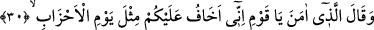
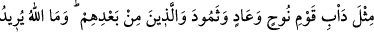
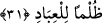

30. İman etmiş olan dedi ki: «Ey kavmim! Doğrusu ben sizin için, (peygamberleri
yalanlayan) toplulukların başlarına gelen bir âkıbetten korkuyorum.”
Firavun kavminden olup da “iman etmiş olan”, nasihat edip öğüt vererek kavmine
hitâben “dedi ki:”
Hadis-i şerifte: “En faziletli cihâd, zâlim bir hükümdara karşı hak sözü
söylemektir.”[179] Çünkü bunda zulme uğrama tehlikesi ve korkusu vardır. Bu sebeple
deliller getirerek yapılan cihâd, kılıç ve mızrakla yapılan cihaddan daha faziletlidir.
“Ey kavmim!” Mûsâ’yı yalanlamanız, öldürme ve işkence etme gibi ona bir
sûikasdde bulunmanız durumunda, “Doğrusu ben sizin için, (peygamberleri
yalanlayan) toplulukların başlarına gelen bir âkıbetten,” yâni onların helâk
günlerinde meydana gelen muazzam olaylar ve korkunç cezâların bir benzerinin size de
gelmesinden “korkuyorum.”
Şayet “normal olan, «geçmiş kavimlerin günleri gibi» denmesi; yani âyette “yevm”
kelimesi yerine çoğul olarak “eyyâm” kelimesinin kullanılması değil miydi? Çünkü her
bir kavmin kendine özgü bir günü/azabı vardı?” diyecek olursan, şöyle cevap veririm:
Kavimlerin yaşadıkları yerler ve zamanlar, tamamen farklı bulunan gruplara
hamledilerek ”ahzâb” şeklinde çoğul olarak zikredilmesi, “günleri”nin de çoğul
getirilmesini gereksiz kılmıştır. Çünkü bir tek gün olduğu şeklindeki bir düşünce, bu
çoğulluk sâyesinde tamamen ortadan kalkar ve maksadın günler olduğu ortaya çıkar.
31. “Nuh kavminin, Âd, Semûd ve onlardan sonra gelenlerin durumu gibi. Allah,
kullarına bir zulüm dileyecek değildir.»
Bir tufanla helâk olup giden “Nûh kavminin,” korkunç bir rüzgârla kökleri kuruyan
“Âd” kavminin “ve” tek bir sayha ile ölen “Semûd’un ve onlardan sonra gelenlerin”
meselâ şehirleri hemencecik harap olan ehl-i mü’tefike, “Yevmü’zzılle azâbı”na tutulan
Eyke ashabının “durumu gibi.”
“__WORD__, devamlı yapılan alışkanlık ve iş demektir.
“Allah, kullarına bir zulüm dileyecek değildir.” Dolayısıyla ilâhî huccet
kesinleşmeden önce onları helak edecek, günahsız yere cezâlandıracak değildir. Ancak
zâlimlerin de intikam almadan peşlerini bırakmaz. O halde azâba uğramamanız için siz
de zulmetmeyiniz.